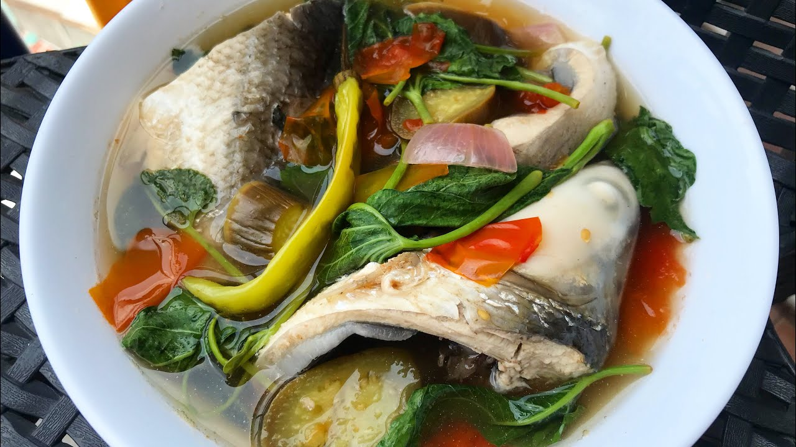

Sinigang Bangus

Description:
This is a savory and tangy dish made of fish and tamarind. It also includes onions, tomatoes, and greens such as spinach and bokchoy. You can make it with any protein as well!
Ingredients:
- 1 medium sized bangus (fish)
- 4 cups water
- 3 whole tomatoes (sliced)
- 1 onion (sliced)
- 1 cup tamarind juice (boil tamarind 1 cup water and extract the juice)
- You can also use a sinigang seasoning packet if you do not have tamarind
- 1 cup of spinach or bokchoy
- Patis (fish sauce) or salt to taste
Directions:
- Clean and cut fish into 3 pieces. Sprinkle with salt.
- In a put, put the tomatoes and onions then boil with 4 cups water.
- Add the tamarind juice/seasoning packet, fish, spinach/bok choy, and patis/salt to taste.
- Simmer until all ingredients are cooked through.
- Serve while hot!
This recipe is adapted from Panlasang Pinoy Meat Recipes.